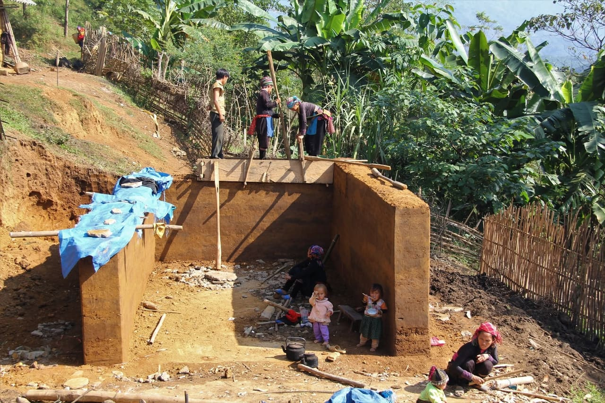
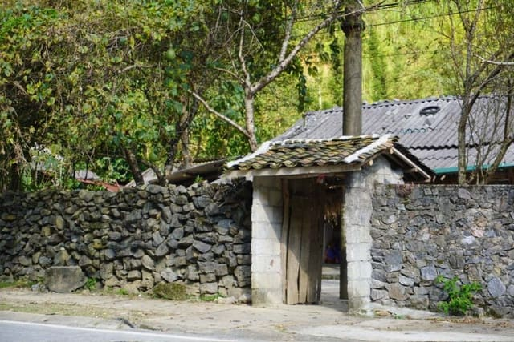
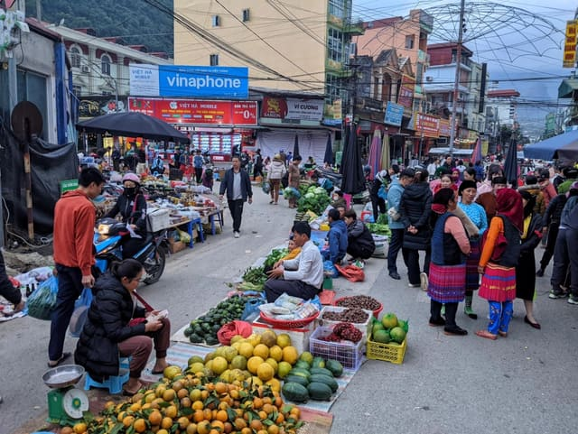
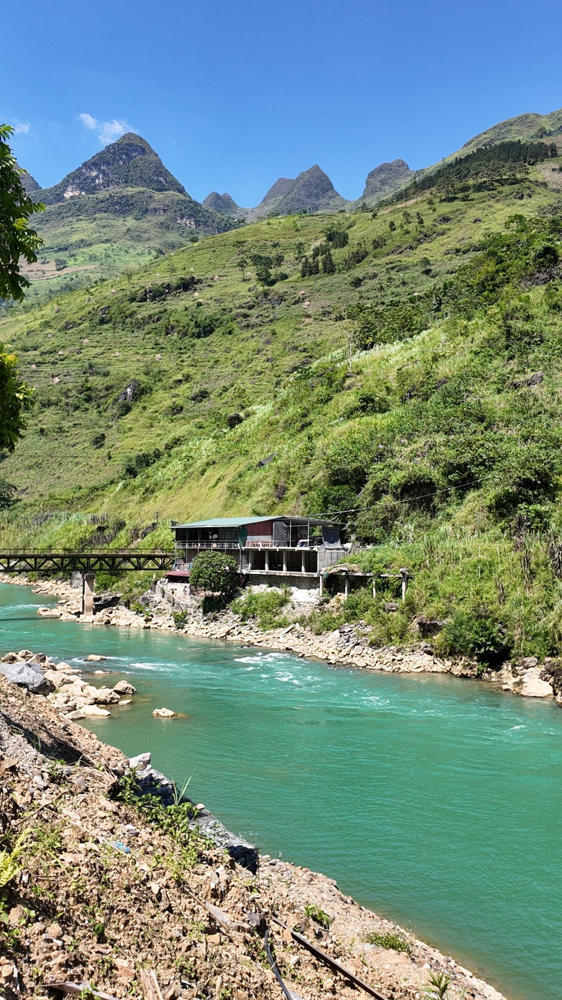
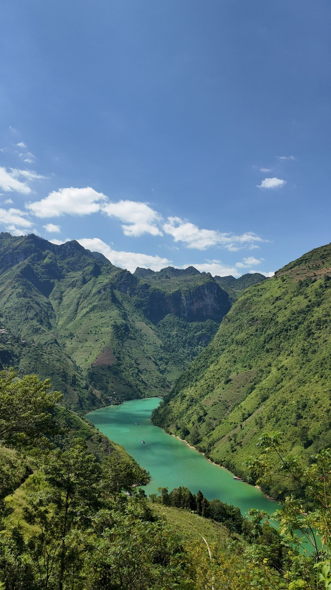
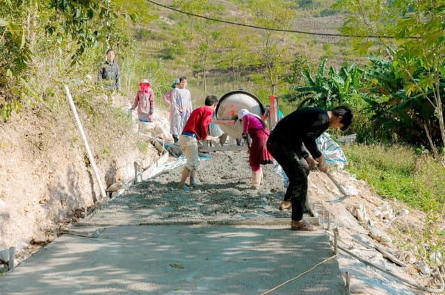
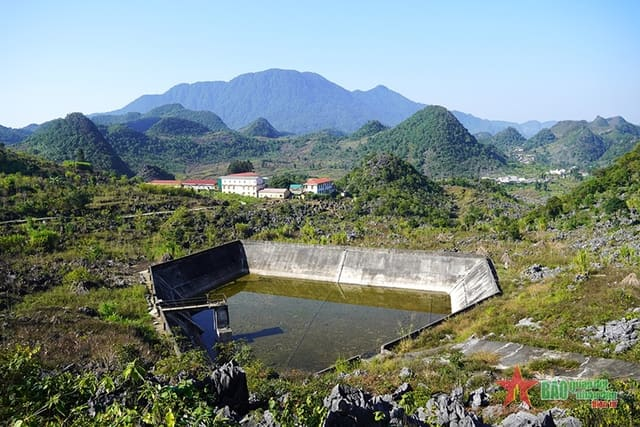
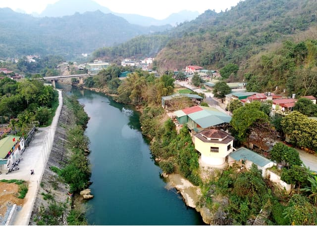

★Press or hold SPACEBAR to carry the water homeYou are ready: press SPACEBAR to enterTap or hold anywhere to carry the water homeYou are ready: tap to enter★
Tsinghua Global SDG Case Competition 2026 · SDG 6 × SDG 5
Carrying More Than Water
Rethinking the Success of Rural Water Investments Through Gender-Responsive Evaluation – A Case Study in Meo Vac, Viet Nam
By Nguyen Tra My · Tran Chuc Linh · Trinh Ho Ha An – Foreign Trade University
On a plateau where rain drains straight into the rock, a reservoir brought water to the centre of a village. It was counted as a success. This is the story of what it changed, and of what the counting left out.
Meo Vac lies high on the Dong Van Karst Plateau, on Viet Nam’s northern border with China. It is a landscape of grey limestone peaks, deep ravines and slopes of broken rock, recognised as a UNESCO Global Geopark.1
2,356 km²
Area of the Dong Van Karst Plateau UNESCO Global Geopark, across four former districts1617
Tourist visits to Ha Giang province in 2024, about 380,000 of them international21
Recognised on 3 October 2010, the Dong Van Karst Plateau was Viet Nam’s first UNESCO Global Geopark.1617
According to UNESCO, about 60% of the geopark’s area is limestone.15
A paradox in stone
In 2024, Ha Giang was named Asia’s Leading Regional Cultural Destination at the World Travel Awards, a year after being named Asia’s Leading Emerging Tourism Destination.22
×
Yet on the same plateau, water runs short every dry season. “Shortage in Meo Vac was not an accident. It returned every year on the same calendar, and every year households had to find their own way through it.”1
Case report, Chapter 1
Where this story happens
Tap a dot or a province for details.
Ha Giang province (until 2025)
Other provinces of Viet Nam
Dong Van Karst Plateau (schematic)
Rivers
Nho Que River (schematic course)
International border
Hanoi
Capital of Viet Nam.
Ha Giang
Capital of Ha Giang province. In 2025 the province was merged into Tuyen Quang province.7
Dong Van
One of the four former districts that make up the Dong Van Karst Plateau UNESCO Global Geopark, with Quan Ba, Yen Minh and Meo Vac.16
Meo Vac
Between 2021 and 2025, Meo Vac invested more than VND 16 billion under Project 1 of Programme 1719 in seven concentrated water works in five communes.4
Seo Sa Lung, Pai Lung commune
Site of the 1,000 m³ reservoir: built from September 2023, in use since July 2024, supplying more than 200 households in three villages.4 Position on this map is approximate.
Dong Van Karst Plateau
About 2,356 km² across four former districts; home to 17 ethnic groups; Viet Nam’s first UNESCO Global Geopark (2010).16
Nho Que River
Rises in Yunnan, China; 192 km long, 46 km of it in Viet Nam.1920 Course drawn schematically.
Northern Viet Nam
The far north of Viet Nam, on the border with China. The capital, Hanoi, lies to the south.
The Dong Van Karst Plateau
Viet Nam’s first UNESCO Global Geopark, recognised on 3 October 2010: about 2,356 km² across four former districts, Quan Ba, Yen Minh, Dong Van and Meo Vac, and home to 17 ethnic groups.1617
Meo Vac
Most families on these slopes belong to ethnic minority groups, the largest of them the Hmong.1 The Nho Que River rises in Yunnan, China, and flows into Viet Nam across the plateau: 192 km long, 46 km of it in Viet Nam.1920
Seo Sa Lung, Pai Lung commune
The village where Programme 1719 financed a 1,000 m³ reservoir, in use since July 2024.4
Illustrative map, simplified and not to scale. It is not an authoritative depiction of international or administrative boundaries. Provinces are shown as they were before the 2025 reorganisation. Seo Sa Lung is placed approximately, within Pai Lung commune; the outline of the plateau and the course of the Nho Que River are drawn schematically. Map data: Natural Earth (public domain).27
A note on names. Place names are those in use at the time of the events. In 2025, Ha Giang province was merged into Tuyen Quang province and district-level government was abolished; since 1 July 2025, Pai Lung has been part of the new Dong Van commune.167
Chapter 2
Meo Vac – People and Place
Most of the families who farm these slopes belong to ethnic minority groups, the largest of them the Hmong.1 Tap the dots to explore.

Earthen-walled houses
Hmong houses on the plateau traditionally have thick walls of rammed earth, set behind fences of stacked stone.2526

Stone fences
The fences are stacked from mountain stone, without bricks, mortar or cement. About half a person high, they separate the house yard from the fields around it.25 Stone fences are a distinctive feature of Hmong villages on the Dong Van plateau and in Meo Vac.26

The Sunday market
Meo Vac’s weekly market is held on Sundays.23 Women selling goods at local markets were among the people the research team spoke with.1

The Nho Que River
The Nho Que rises in Yunnan, China, and flows into Viet Nam: 192 km long, 46 km of it in Viet Nam.1920 Photo: research team, 13 September 2026.

Ma Pi Leng Pass
The pass runs for about 20 km.19 Photo: the Nho Que canyon seen from the road, research team, 13 September 2026. [TO BE ADDED: altitude of Ma Pi Leng Pass. Most sources give about 1,200 m, some travel sites 2,000 m; the team will decide.]

Water stored at home
Households store rainwater at home through the wet season. When it runs out, the nearest source may be a thin flow from a crevice high in the rock, or water near the bottom of a ravine.1
Chapter 3
Water That Does Not Stay
Up in the high forest areas, people still have to carry water on their backs for daily use once rainwater runs out.
— Chu Minh Quang, head of a local management board in Meo Vac2
Open water-storage tanks in a karst valley.
Rain is not what the plateau lacks. In the wet season it falls heavily…1
…but it does not stay. The water drains through cracks and sinkholes in the limestone…1
…and disappears underground, leaving few streams or ponds on the surface.1
When the dry season comes and the rainwater stored at home runs out, the nearest source may be a thin flow from a crevice high in the rock, or water near the bottom of a ravine.1
Wet season and dry season
[TO BE ADDED: average monthly rainfall for Meo Vac. No official source found yet. Candidates: QCVN 02:2022/BXD (Ministry of Construction), Table A.25, average monthly rainfall by station; or the provincial statistical yearbook.]
Carry the water
Press and hold the button to carry a 20-litre can home. Watch what the people of Meo Vac described.
20-litre can
about 1 hour a day
to bring back a single bucket, just enough for cooking and for washing hands and feet.
For generations, households found their own way through each dry season. These are not stages that replaced one another: several are still in use today.
1Still in use in 2026
Searching the rock
After a full day in the fields, people set out in the evening, through the forest and up the mountain, searching crevice by crevice for enough water to carry home for the next day. (A Seo Sa Lung villager’s account to a reporter.)1 Where water sources are distant, people still go down near the ravines to find water and carry it back in plastic cans on their backs.2
2Still in use in 2026
Storing the rain
Rainwater is collected and stored at home through the wet season, until it runs out. Donor-funded programmes, including one supported by the International Fund for Agricultural Development (IFAD), built rainwater tanks and gravity-fed water systems in parts of Ha Giang. Coverage remained partial.1
3Background (web source)
“Hanging lakes”
121 “hanging lakes”, reservoirs built high on the rock, now hold about half a million m³ of water on the plateau and serve some 100,000 people.24
4Still in use in 2026
Pipes bought at the market
Households bought long pipes at the market and ran them from sources higher up the mountain down to their homes. Getting the water flowing still took about an hour a day, but it no longer cut into the time needed for school or work.2
5Still in use in 2026
Water by the truckload
Shops collect rainwater in the wet months, then buy water by the truckload, around 10 m³ at a time, because there is no piped supply. Drilled wells cannot be used: the water is polluted and salty. Those with a vehicle could buy water; those without carried it.21
6Public investment
A reservoir for the village
Under Programme 1719, concentrated water works (reservoirs, tanks and pipe networks shared by whole villages) were funded for the karst villages of Meo Vac.1
The reservoir, step by step
Oct 2021
Programme 1719 approved
The Prime Minister approves Programme 1719 (Decision 1719/QĐ-TTg, 14 October 2021), covering 2021–2030. Project 1 targets residential land, housing, farmland and domestic water. Project 8, led by the Viet Nam Women’s Union, works on gender equality.3
2021–2025
Investment in Meo Vac
Meo Vac invests more than VND 16 billion under Project 1 to build, repair and upgrade seven concentrated water works in five communes: Xin Cai, Khau Vai, Lung Pu, Pai Lung and Can Chu Phin.4
Sept 2023
Construction begins
With more than VND 1 billion from the programme, construction begins on a concentrated reservoir in the centre of Seo Sa Lung village.4
Jul 2024
In use
The reservoir is finished and in use, less than a year after construction began.4
Jun 2025
Reported as a success
The national press credits Programme 1719 with solving Meo Vac’s water shortage.4
Aug 2025
Phase 1 reviewed
A national conference chaired by the Prime Minister reviews phase 1 (2021–2025): nearly half a million households have gained access to domestic water.5
Sept 2026
Fieldwork
The research team interviews about fifteen people in Meo Vac: villagers, women selling goods at local markets, and local officials.12
The commune’s Party secretary told reporters that the reservoir also supplied the agencies and units based in the commune.4
Before and after

Before

After
[TO BE ADDED: a matching before/after pair of the Seo Sa Lung site. Press photos (e.g. Dân tộc và Phát triển) can be used only with written permission.]
Chapter 5
A Success by Whose Measure?
Women also have to fetch it; if they don’t fetch it, what would they use to bathe?
Nguyen Thi Nguyet travelled to Meo Vac in September 2026 to see what the reservoir had changed in daily life. She expected to document a success story.1
Nguyen Thi Nguyet is a composite character who represents the research team. She is not a real individual.
Some interviewees lived outside the villages served by the reservoir. Their accounts describe the wider context of water access in the district, not the reservoir’s users alone.1
“Girls are more diligent”
10of about 15
people interviewed described women and girls as taking on a wider range of work than men and boys: fetching water, washing clothes, working in the fields and selling at the market.2
Girls fetch water more often because they are “more diligent”.
No one described water as a job reserved for women. It simply fell to them more often. No one called it a rule. To Nguyet, it sounded like an expectation, and in practice the expectation decided who carried the water.1
Carrying water, then housework
For the women and girls Nguyet heard about, water was one task in a chain. Select each link.
Fetching and carrying it home, then rationing it between cooking, drinking and washing, often using it more than once before it was thrown away.1
Once the water had been fetched, there were still the goats to look after, for at least an hour every day.2
Work in the fields, on which most families depended for their income.1
Washing clothes, one of the tasks interviewees described women and girls taking on.2
For the youngest, school, with the trips for water fitted around lessons.1
Someone had to notice when the store was running low, decide what the remaining water would be used for first, and decide when it was time to go for more. None of this was counted anywhere.1
Making water easier to reach shortened one link in the chain. It did not, by itself, change who was expected to carry the rest.1
Time saved is not time controlled
≈ 15 min
saved per trip on average after water supply interventions, adding up to around eight hours a week per household (synthesis of studies)13
41 min
cut from women’s daily collection time by new public water points in rural Benin; women still spent about two hours a day on water14
Time saved on water could become rest, study, paid work or a seat at a village meeting. Or it could be absorbed at once by the next task in the chain.1
Four steps the reports ran together
Having access to water
Using it
Taking part in meetings about it
Having a say in the decisions
A woman could use a water facility without being asked about it. She could attend a meeting without her view shaping the outcome.1
Who has a say?
Stakeholders and their influence over water decisions. Select a name for details.
High influence
Medium
Low
Programme 1719 agencies (national and provincial)
Role in the case
Fund, guide and report on water works under Project 1
Main interests
Coverage targets; verifiable results
Influence over water decisions
High
Commune authorities (Pai Lung; since 2025, Dong Van commune)
Role in the case
Implement works; local planning and reporting
Main interests
Delivering and reporting works
Influence over water decisions
High
Households (heads of household)
Role in the case
Water users; decide the household division of labour
Main interests
Reliable and affordable water
Influence over water decisions
High within the household; low in projects
Reservoir operators and local management boards
Role in the case
Operate and maintain works; manage dry-season supply
Main interests
Reliable supply; maintenance costs
Influence over water decisions
Medium
Men and boys
Role in the case
Water users; occasional collectors
Main interests
Convenience
Influence over water decisions
Medium within the household
Viet Nam Women’s Union (Project 8)
Role in the case
Gender equality activities in ethnic minority areas
Source: assessment by the authors based on the case (case report, Appendix D).1
Three ways to define success
As the programme closed its first phase and set directions for 2026–2030, the question had practical weight. For the water works that would follow Seo Sa Lung, three broad ways of defining success were possible.1
Presented in the order used in the case report. This site does not recommend one.
Option 1
The first was to keep the existing measures: works completed, storage built, households and people served, facilities in working order. These measures were simple, comparable across provinces and already part of routine reporting. They required no new data. Every hour and every dong spent on measuring something else would be one not spent on extending pipes to places still buying water by the truckload.
Option 2
The second was to keep those measures and add a small set of gender-responsive ones: how much time households spent on water in the dry season, and who spent it; how much they paid for water they had to buy; whether girls stayed in school; how far women had a say in decisions about water. These would show more of what a reservoir changed. But they would require new data and someone to collect it, and it was not clear who that would be: commune staff, the operators of the water works, or the Women’s Union under Project 8.
Option 3
The third, and most demanding, was to build gender into the whole life of a water project: asking women and girls where and when water was needed; involving them in decisions on siting, dry-season sharing and maintenance; and judging success by what changed in their time, their schooling and their voice. This would require the water and gender components of the programme, and the agencies behind them, to plan and report together.
Your choice is saved only in this browser on this device. Nothing is sent anywhere.
Wording quoted from the case report, Section 5.2.1
Questions for discussion
By whose standards was the Seo Sa Lung reservoir a success? What did the reported indicators capture, and what did they leave out?
Why might shorter trips for water not translate into more time and choice for women and girls? What role did household expectations play in this case?
Who should take part in decisions about rural water works, from choosing a site to sharing water in the dry season and judging results? What would meaningful participation by women look like?
If you led the commune with limited staff and budget, which gender-responsive indicators would you add, who would collect the data, and what would you give up to pay for it?
Should measuring the gender outcomes of water infrastructure be the job of the programme’s water component (Project 1), its gender component (Project 8), or both? Why?
In Seo Sa Lung, the water had arrived. What it had made possible, and for whom, was still an open question.1
Nguyen, T. M., Tran, C. L., & Trinh, H. H. A. (2026). Carrying more than water: Rethinking the success of rural water investments through gender-responsive evaluation – A case study in Meo Vac, Viet Nam [Case report]. Tsinghua Global SDG Case Competition 2026.
Research team. (2026, September). Semi-structured field interviews, Meo Vac, Viet Nam [Unpublished primary data; about 15 interviewees, detailed notes for 5]. Reported in the case report, Appendices B and C.
Prime Minister of Viet Nam. (2021, October 14). Quyết định số 1719/QĐ-TTg phê duyệt Chương trình mục tiêu quốc gia phát triển kinh tế – xã hội vùng đồng bào dân tộc thiểu số và miền núi giai đoạn 2021–2030, giai đoạn I: Từ năm 2021 đến năm 2025 [Decision No. 1719/QĐ-TTg approving the National Target Programme for Socio-Economic Development in Ethnic Minority and Mountainous Areas for 2021–2030, Phase I: 2021–2025].
Vũ, M., & Minh, G. (2025, June 3). Hà Giang: Giải bài toán thiếu nước ở Mèo Vạc nhờ Chương trình MTQG 1719 [Ha Giang: Solving water shortages in Meo Vac through National Target Programme 1719]. Dân tộc và Phát triển.
Sơn, H. (2025, August 13). Chương trình 1719 giai đoạn II: Giải quyết 5 vấn đề nhức nhối nhất [Programme 1719 phase II: Addressing the five most pressing issues]. Báo Điện tử Chính phủ.
Standing Committee of the National Assembly of Viet Nam. (2025). Nghị quyết số 1684/NQ-UBTVQH15 về việc sắp xếp các đơn vị hành chính cấp xã của tỉnh Tuyên Quang năm 2025 [Resolution No. 1684/NQ-UBTVQH15 on the arrangement of commune-level administrative units of Tuyen Quang province in 2025].
National Assembly of Viet Nam. (2025, June 12). Nghị quyết số 202/2025/QH15 về việc sắp xếp đơn vị hành chính cấp tỉnh [Resolution No. 202/2025/QH15 on the arrangement of provincial-level administrative units].
World Health Organization & United Nations Children’s Fund. (2023). Progress on household drinking water, sanitation and hygiene 2000–2022: Special focus on gender.
Toyama, H., Nguyen, T. G., Behuria, R., & Luong, T. T. N. (2025). Approaches to drive women’s inclusion and empowerment in the water sector in Viet Nam (ADB Briefs No. 363). Asian Development Bank.
Sharma Waddington, H., Dickin, S. K., Basak, K., Mohandas, S., & Macura, B. (2025). No time to waste: A synthesis of evidence on time reallocation following water, sanitation and hygiene interventions. Journal of International Development, 37(7), 1503–1524.
Gross, E., Günther, I., & Schipper, Y. (2018). Women are walking and waiting for water: The time value of public water supply. Economic Development and Cultural Change, 66(3), 489–517.
Nông nghiệp và Môi trường. (n.d.). 121 hồ treo thủy lợi trên Cao nguyên đá, nửa triệu khối nước và 100 ngàn người được giải hạn [121 hanging irrigation lakes on the stone plateau: half a million cubic metres of water and 100,000 people relieved from drought].
Dân tộc và Phát triển. (n.d.). Cận cảnh bờ rào đá – nét kiến trúc độc đáo của người Mông ở Hà Giang [Close-up of stone fences, a distinctive architectural feature of the Hmong in Ha Giang].